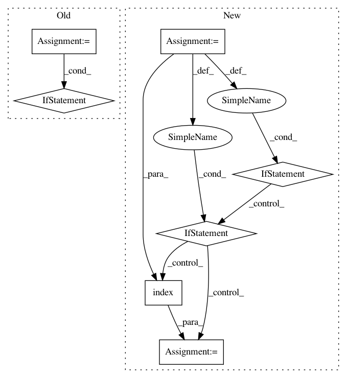

6770d28a844597e064b2e0902a36207ff877857d,python/tvm/relay/frontend/tensorflow.py,GraphProto,_get_relay_func,#GraphProto#Any#Any#Any#Any#,2559
Before Change
// First, parse all control flow nodes.
// Convert tf.cond to Branch and tf.while_loop to Loop.
sorted_cf_nodes = []
current_node_name_prefix = None
exits = []
// Sort control flow nodes to move all Exit nodes to the end
// of corresponding while_loop block.
for i, node in enumerate(control_flow_nodes):
node_name_prefix = node.name.rsplit("/", 1)[0]
if current_node_name_prefix is None or current_node_name_prefix != node_name_prefix:
if node_name_prefix in self._while_loop_name_set:
sorted_cf_nodes.extend(exits)
exits.clear()
current_node_name_prefix = node_name_prefix
if node.op == "Exit":
exits.append(node)
else:
sorted_cf_nodes.append(node)
After Change
// Sort control flow nodes to move all Exit nodes to the end
// of corresponding while_loop block.
for node in control_flow_nodes:
loop_name = find_parent_loop_name(node.name, self._while_loop_name_set)
if node.op == "Exit":
if loop_name not in exit_pos_map:
ordered_prefix.append(loop_name)
exit_pos_map[loop_name] = len(sorted_cf_nodes)
sorted_cf_nodes.append(node)
elif loop_name in self._while_loop_name_set:
if loop_name not in exit_pos_map:
sorted_cf_nodes.append(node)
else:
sorted_cf_nodes.insert(exit_pos_map[loop_name], node)
for j in range(ordered_prefix.index(loop_name), len(ordered_prefix)):
exit_pos_map[ordered_prefix[j]] += 1
else:
sorted_cf_nodes.append(node)
for node in sorted_cf_nodes:
In pattern: SUPERPATTERN
Frequency: 3
Non-data size: 7
Instances
Project Name: apache/incubator-tvm
Commit Name: 6770d28a844597e064b2e0902a36207ff877857d
Time: 2020-09-03
Author: kevinthesunwy@gmail.com
File Name: python/tvm/relay/frontend/tensorflow.py
Class Name: GraphProto
Method Name: _get_relay_func
Project Name: prody/ProDy
Commit Name: 54a02c7a3ca3cce7e62f92e0a27244d27f8d9e83
Time: 2019-02-08
Author: hongchun@pitt.edu
File Name: prody/ensemble/functions.py
Class Name:
Method Name: refineEnsemble
Project Name: prody/ProDy
Commit Name: bb958949caaba2341ae5662c484d5106d68e4aed
Time: 2019-04-15
Author: hongchun@pitt.edu
File Name: prody/ensemble/functions.py
Class Name:
Method Name: refineEnsemble